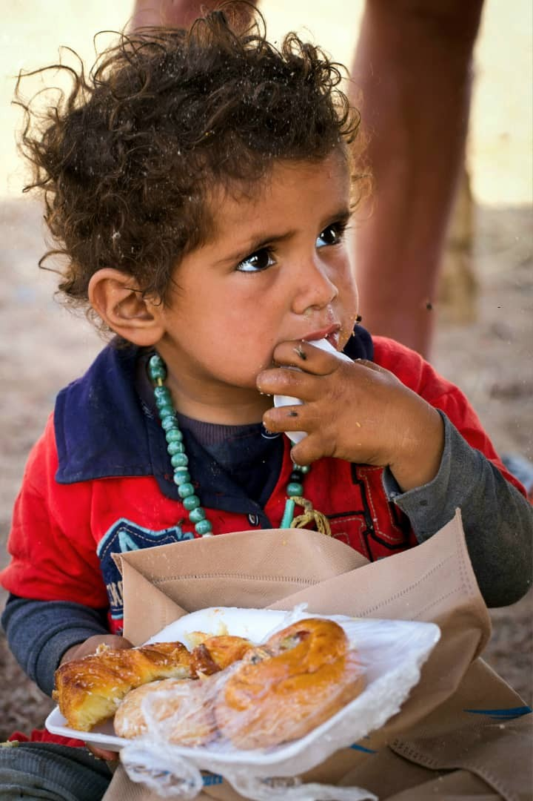
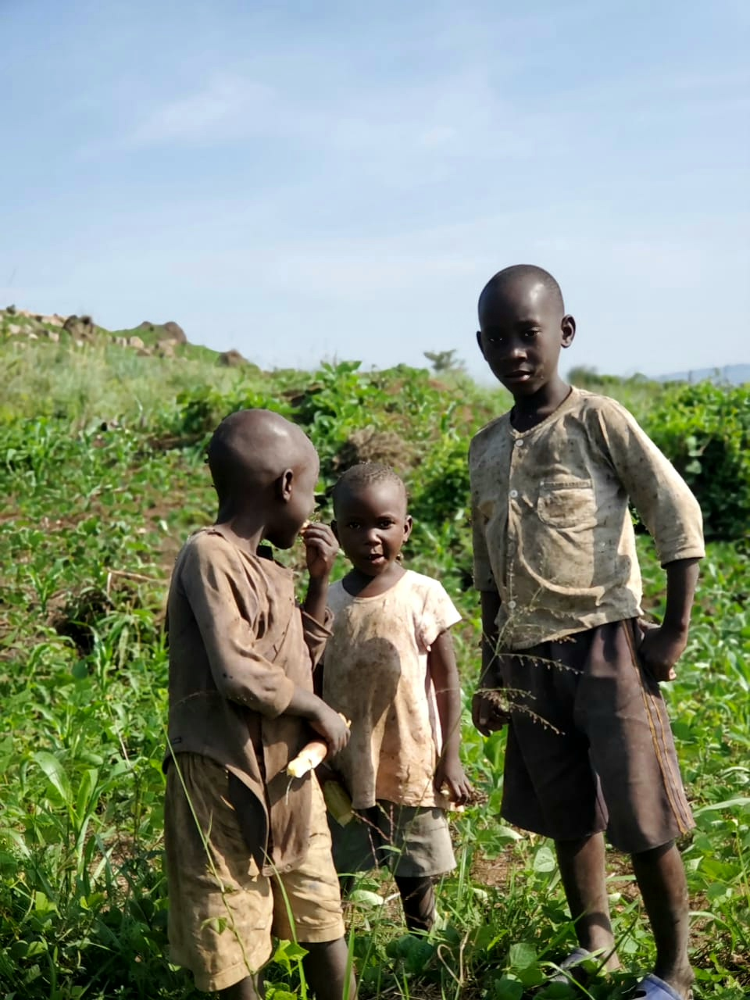

Why I Created HopeToken (YAMB)
Hope is what keeps many of us going every single day. In the world of crypto, someone might invest $10,000 and lose $9,900 — yet still hold on to the remaining $100, believing that one day it could grow to $100,000. That’s the power of hope.
But there are challenges in life far beyond charts and markets. Natural disasters, wars, disease, poverty, and displacement strip people of everything — their homes, their jobs, and sometimes even their families. That’s where HopeToken comes in.
This project was born out of real experiences and real stories.
In 2023, while exploring Uganda’s West Nile region, I visited a place called Sipi Falls. A group of children ran toward us shouting “Yamb!” I asked our guide what it meant. He said: “It means Help.” These children had no food, no homes, no access to education or healthcare. I couldn’t solve everything, but in that moment, I gave them what I could — and, most importantly, I gave them a little hope.
In December 2024, I traveled to Dhaka, Bangladesh to donate food. While there, I met a local group raising funds for a mother of three battling late-stage breast cancer. They had been collecting for two months and raised only $900 of the $7,000 needed for treatment. They were losing hope. I was able to help, and at that moment, I realized — this is what HopeToken is about.
People around the world want to give. Many generous hearts in crypto and beyond want to support those in need, but they don’t always know where or how. HopeToken bridges that gap.
We’re building a worldwide network of agents, committed to reaching the most vulnerable. HopeToken is about giving hope to those who feel they’ve lost it all.
Whether it’s through small donations or larger support, HopeToken allows anyone, anywhere, to be a source of hope.
